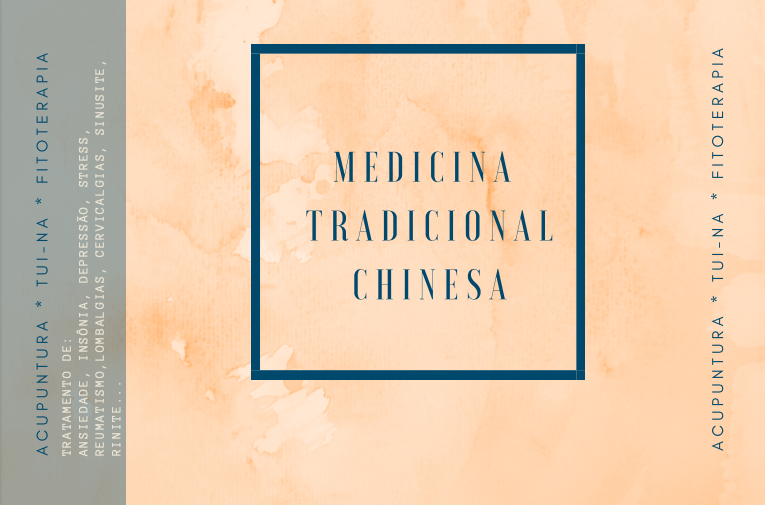

Somos profissionais de Medicina Tradicional Chinesa com cédula profissional
dentro dos dispositivos anunciados na lei nº 109/2019 de 9 de Setembro.
Iniciamos o nosso percurso na UMC, presidida pelo Dr. Pedro Choy, parceira europeia da
ChengDu University of Traditional Chinese Medicine,
uma das mais prestigiada e tradicionais Universidades de Medicina Tradicional Chinesa na China.
Estabeleceu em 2006 uma parceria pedagógica que permitisse a obtenção pelos seus estudantes do
grau de licenciatura chinesa em MTC reconhecida pela Ministério da Educação da China.
Faça a sua marcação

Qualquer dúvida não exite em contatar. Página principal
Envie um email
para realizar a sua marcação.